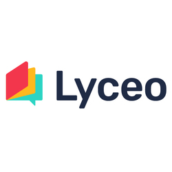

|
Provincie Gelderland |
September 2021 - Heden |
|
Traineeship |
||
Arcadis Nederland - Afdeling bodemadvies |
September 2020 - Januari 2021 | |
|
Afstudeerstage. Werkzaamheden bestonden uit werken in projectteams op onderwerpen als bodemsanering, GIS-applicaties voor bodemonderzoek en de Omgevingswet |
||

|
Het Streek College |
Februari 2021 - Juli 2021 |
|
Stagiair bovenbouw havo/vwo voor het vak aardrijkskunde |
||

|
Foundation for Wildlife and Habitat Conservation |
2017 - heden |
|
Technisch adviseur en projectbegeleider |
||
|  |
Lyceo |
2017 - 2021 |
|
Examentrainer |
||
Wageningen University and Research |
2018-2020 | |
|
Studentbegeleider |
||
Master Leraar voorbereidend Hoger Onderwijs - Universiteit Utrecht |
Januari 2021 - Augustus 2021 | |
|
Lesbevoegdheid voor de onder- en bovenbouw van havo en vwo aardrijkskunde |
||
Master International Land and Water Management - Wageningen University and Research |
September 2018 - Januari 2021 | |
| Masterthesis: 'Using Sentinel-1 and field measurements to evaluate LISEM performance in Catsop, South Limburg' | ||
Bachelor International Land and Water Management - Wageningen University and Research |
September 2015 - Maart 2018 | |
Praeses van studentenvereniging C.S.F.R. Wageningen - Dei Gratia |
2019 | |
|
Werkzaamheden bestonden uit het geven van dagelijkse leiding aan bestuur en vereniging, eindverantwoordelijke voor genomen besluiten |
||
Bestuur Happietaria Wageningen |
2017 | |
|
Happietaria is een pop-up restaurant dat geld ophaalt voor ontwikkelingsprojecten in ontwikkelingslanden. Het restaurant wordt volledig gerund door studenten. Werkzaamheden bestonden uit het opzetten van het restaurant, promotieactiviteiten, het coördineren van vrijwilligers en het operationeel houden van het restaurant. |
||